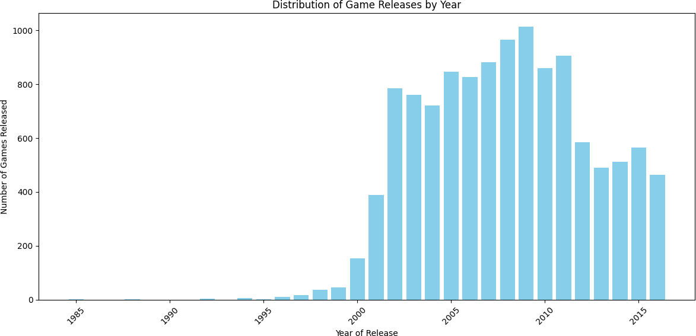
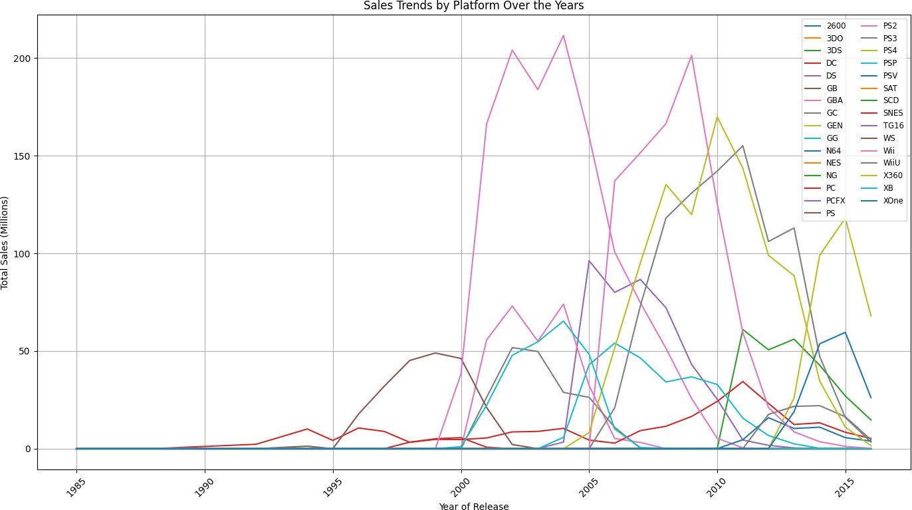
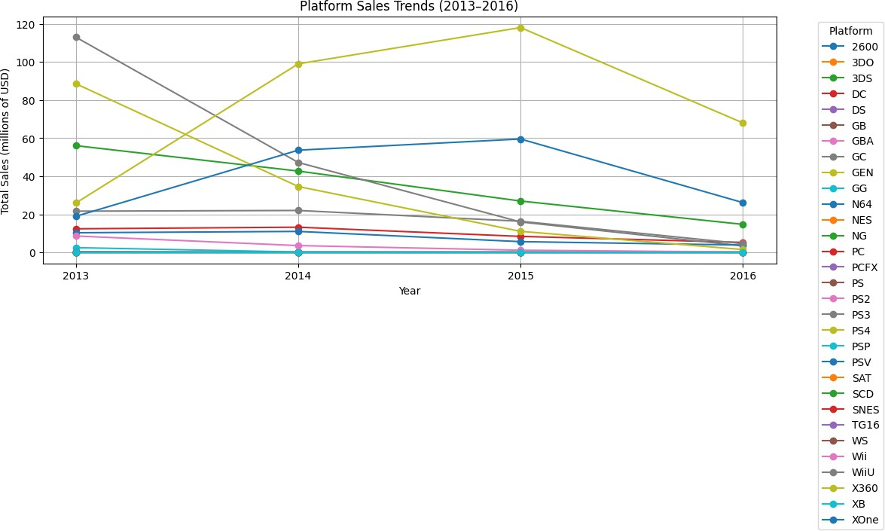
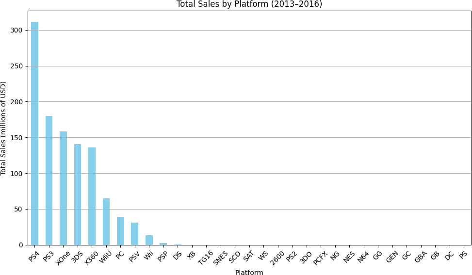
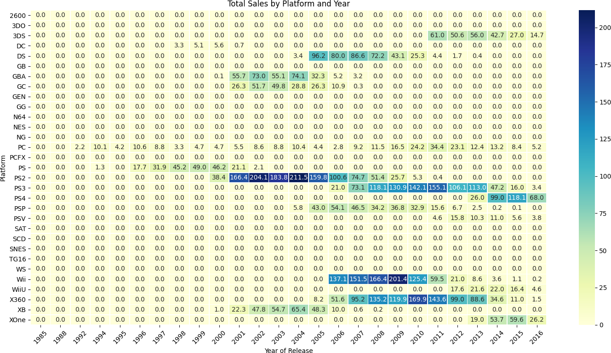
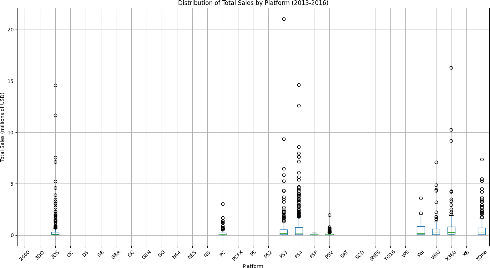
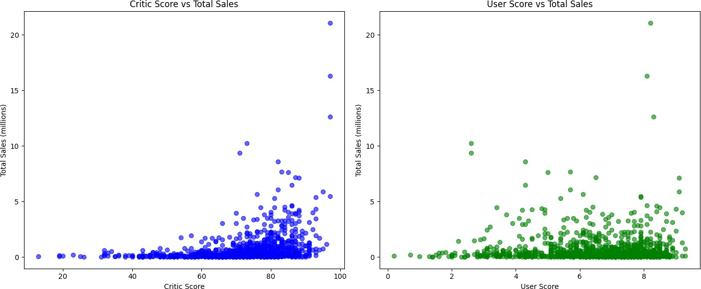
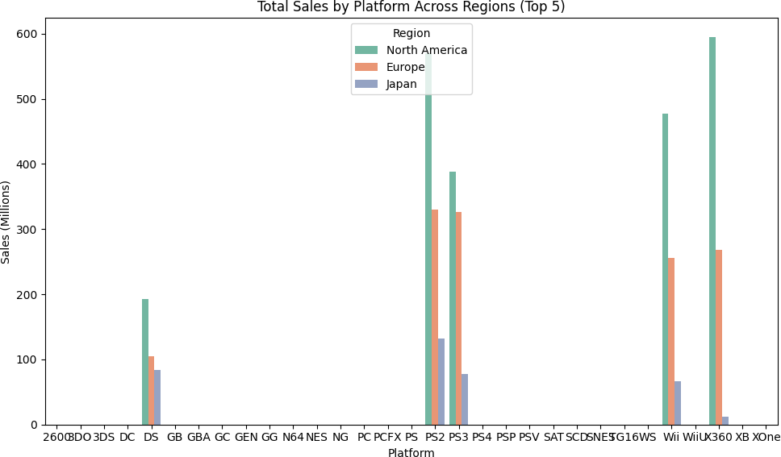
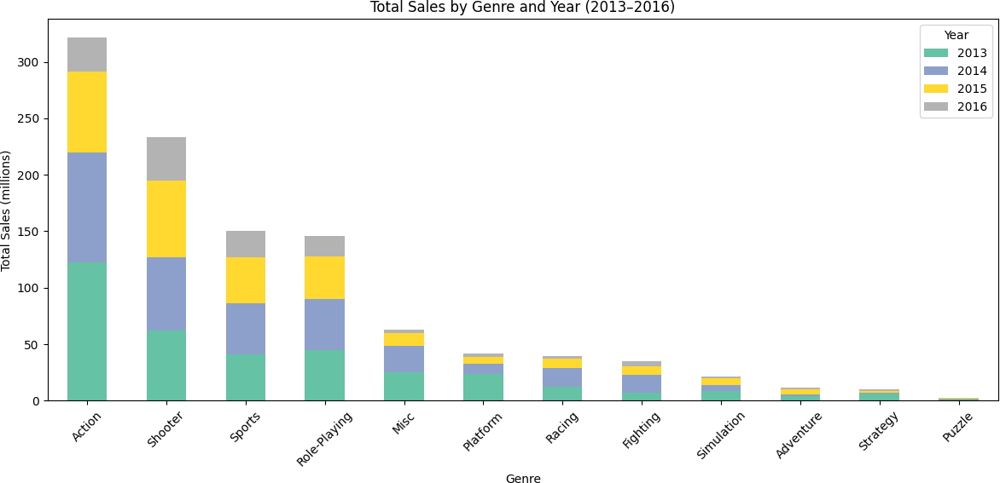

At a Glance
- Analyzed 16,715 game records to build a data-backed regional advertising strategy for 2017
- Hypothesis-tested platform and genre preferences across North America, Europe, and Japan
- Python, Pandas, SciPy, Matplotlib, EDA

Problem
An online game retailer planning its 2017 advertising budget cannot afford to guess which platforms, genres, and regional markets to target. The video game industry is brutally uneven — a handful of titles generate the bulk of sales while thousands of others barely register — and the historical patterns that drove that concentration shift as platforms rise and fall. Raw sales records going back to 1980 contain decades of irrelevant signal: games released in the 1990s tell you nothing useful about what will sell in 2017. The real challenge is identifying which time window is actually predictive, which variables separate hits from misses, and whether those patterns hold consistently across North America, Europe, and Japan — or whether each region requires its own strategy. Making defensible advertising recommendations requires statistical evidence, not intuition.
Solution
This project analyzed 16,715 game records spanning 1980 through 2016 to identify the patterns that predict commercial success and translate them into a data-backed 2017 campaign strategy for Ice, a fictional online game retailer. The analysis began with a defensible time window selection — narrowing to the 2012–2016 period as representative of the current market — then examined platform sales trajectories, genre performance by region, and the relationship between critic scores and commercial outcomes. Hypothesis tests using the t-test and Levene's test for variance compared user ratings across platforms and genres, determining where apparent differences were statistically significant rather than noise. Regional preferences emerged as a meaningful finding: North America and Europe leaned toward action and shooter titles on PS4 and Xbox One, while Japan favored RPGs and 3DS. The conclusion was a concrete set of regional campaign recommendations grounded in statistical evidence rather than category averages.
Skills Acquired
- Python — the implementation language for the full EDA pipeline: data loading, preprocessing, exploratory analysis, visualization, and statistical testing.
- Pandas — used for data loading, missing value treatment, calculating total global sales, segmenting by platform and genre, and pivoting data for regional comparisons. The dataset's mixed types and sparse numeric fields required careful Pandas preprocessing before any analysis was reliable.
- NumPy — used for numerical aggregations and for generating the filtered datasets passed into SciPy's statistical tests.
- Matplotlib — the primary charting library for platform sales timelines, genre performance bar charts, and the sales distribution visualizations that informed the 2012–2016 time window selection.
- Seaborn — used for box plots and correlation plots that made distribution shape and spread visible, complementing the Matplotlib charts with a cleaner statistical visualization layer.
- SciPy — provided the independent t-test and Levene's test used to determine whether platform and genre rating differences were statistically significant. Using formal tests rather than visual inspection is what makes a recommendation defensible in a business context.
- EDA (Exploratory Data Analysis) — the structured methodology applied throughout: inspect, clean, visualize, question, then test. EDA is not a single step but a mindset — every visualization generates a hypothesis, and every hypothesis earns a test.
- Hypothesis Testing — the statistical framework applied at the end of the analysis to validate observations before turning them into recommendations. Two null hypotheses were tested: equal average user ratings across platforms, and equal average user ratings across genres.
The numbers behind those recommendations are what the rest of this writeup unpacks — starting with what most analysts get wrong about selecting a relevant time window.
Deep Dive
The video game industry is massive — and brutally uneven. A handful of titles generate hundreds of millions in sales while thousands of others barely register. For a retailer trying to plan its advertising budget, the question isn't just what's popular — it's what patterns predict popularity, and where in the world to push.
This project puts me in the role of an analyst for Ice, an online game retailer. The task: dig into historical sales data covering games released through 2016, find the patterns that drive success, and build a data-backed plan for Ice's 2017 advertising campaigns.
Why This Project?
This was Sprint 5 of my TripleTen AI and Machine Learning Bootcamp, focused on exploratory data analysis and statistical hypothesis testing. It's one of the most business-grounded projects in the program — instead of a fixed model accuracy target, success meant producing analysis that someone could actually use to make decisions.
Video game sales is a great testbed for EDA because the patterns are genuinely interesting: platform life cycles, regional taste differences, the relationship between critic reviews and commercial performance, and how a single blockbuster can skew every average. Learning to recognize those dynamics — and communicate them clearly — is the real skill here.
What You'll Learn from This
- How to decide which historical data is relevant for a forward-looking business question
- Why the same data can tell completely different stories depending on how you slice it by region
- What correlation actually means for Critic Score vs. sales — and why User Score tells a different story
- How to structure and execute a two-sample hypothesis test from scratch, including stating H₀ before seeing the data
- How to turn EDA findings into actionable advertising recommendations
Key Takeaways
- PS4 led the 2013–2016 period with 28.9% market share and 311M USD in global sales across 379 games
- Critic Score had a moderate positive correlation (r = +0.31) with total sales; User Score had essentially none (r ≈ 0.00)
- Japan plays differently. Role-Playing held 30.32% market share in JP — double the Action share. NA and EU were dominated by Action, Shooter, and Sports
- Xbox One vs. PC user ratings are statistically different (t = −4.67, p ≈ 0.000) — reject H₀
- Action vs. Sports user ratings are not statistically different (t = 1.79, p = 0.074) — fail to reject H₀
- Sales peaked industry-wide around 2008 and have declined since, driven by mobile and digital distribution
The Dataset
Ice's historical catalog: 16,715 records, 11 columns. Each row represents one game release — with its platform, genre, regional sales figures (North America, Europe, Japan, Other), ESRB rating, and review scores from critics and users. The target wasn't a column to predict — it was a question to answer: what drives total sales?
| Category | Detail |
|---|---|
| Total records | 16,715 games |
| Columns | 11 (Name, Platform, Year, Genre, NA/EU/JP/Other Sales, Critic Score, User Score, Rating) |
| Missing values | Critic Score (8,578 missing), User Score (6,701 missing), Rating (6,766 missing) |
| Duplicates | None found |
| Analysis window | 2013–2016 (most relevant for 2017 planning) |
My Process
Phase 1
Import Libraries & Load Data
Loaded the dataset and set up the environment with the full data science stack: pandas for data manipulation, NumPy for calculations, Matplotlib and Seaborn for visualizations, and SciPy for statistical testing.
import pandas as pd import numpy as np import matplotlib.pyplot as plt import seaborn as sns from scipy import stats from scipy.stats import ttest_ind df_games = pd.read_csv('/datasets/games.csv', sep=',') pd.set_option('display.max_rows', 100) pd.set_option('display.max_columns', None) df_games.info(show_counts=True)
Phase 2
Data Cleaning & Preparation
Standardized column names to lowercase, converted data types (Year of Release to
integer, User Score to float — it was stored as a string including the value
'tbd' for unscored games), and calculated a total_sales
column by summing all four regional sales columns. Missing values in Critic Score,
User Score, and Rating were not imputed — analyses using those columns were run
only on records where scores existed.
# Standardize column names df_games.columns = df_games.columns.str.lower() # Convert year to integer, handling missing values df_games['year_of_release'] = pd.to_numeric( df_games['year_of_release'], errors='coerce' ) # User Score contains 'tbd' strings — replace with NaN then cast df_games['user_score'] = pd.to_numeric( df_games['user_score'].replace('tbd', np.nan), errors='coerce' ) # Calculate total sales across all regions df_games['total_sales'] = ( df_games['na_sales'] + df_games['eu_sales'] + df_games['jp_sales'] + df_games['other_sales'] )
Phase 3
Sales Trends & Choosing the Right Time Window
The dataset spans 1980–2016. Using all of it for 2017 planning would be a mistake — the PS1 era tells you nothing useful about the PS4 era. I analyzed game release volume and total sales by year to identify when the modern market took shape.
Sales grew sharply from 2001, peaked around 2006–2009 (up to 589 million USD in a single year), then declined — driven by the rise of mobile gaming and digital distribution eating into physical retail. By 2016, the market had stabilized into a smaller but focused set of active platforms. I used 2013–2016 as the primary analysis window: recent enough to be relevant, long enough to include a full platform generation cycle.
games_per_year = df_games['year_of_release'].value_counts().sort_index() plt.figure(figsize=(12, 6)) plt.bar(games_per_year.index, games_per_year.values) plt.title('Distribution of Game Releases by Year') plt.xlabel('Year of Release') plt.ylabel('Number of Games Released') plt.xticks(rotation=45) plt.tight_layout() plt.show() # Filter to the relevant window for 2017 planning df_recent = df_games[df_games['year_of_release'].between(2013, 2016)]

⚡ Try It — Interactive Chart

⚡ Try It — Interactive Chart
Phase 4
Platform Analysis & Sales by Platform
Among 2013–2016 releases, I focused on platforms with at least 10 games to avoid drawing conclusions from statistically insignificant samples. Box plots showed the wide variation within each platform — a small number of blockbuster titles skewed averages significantly above medians.
PS4 emerged as the clear leader in this period: 379 games, 311M USD in total global sales, and a 28.9% market share — the highest of any platform. Europe slightly led North America in PS4 sales (139.7M vs. 107.9M USD), while Japan contributed only 15.7M — a first sign that regional preferences diverge sharply by platform.
| PS4 Metric | Value |
|---|---|
| Games released (2013–2016) | 379 |
| Total global sales | ~311M USD |
| Average sales per game | 0.82M USD (median: 0.20M) |
| EU sales | 139.7M USD (largest region) |
| NA sales | 107.9M USD |
| JP sales | 15.7M USD |
| Average Critic Score | 72.09 |
| Market share | 28.9% (highest) |
⚡ Try It — Interactive Chart

⚡ Try It — Interactive Chart

⚡ Try It — Interactive Chart

⚡ Try It — Interactive Chart

⚡ Try It — Interactive Chart
Phase 5
Review Scores vs. Sales
I ran scatter plots and correlation analysis to test whether review scores actually predicted commercial performance — a question that matters for any retailer deciding which titles to stock and promote.
# Filter to rows with critic scores for correlation analysis df_scored = df_recent.dropna(subset=['critic_score']) critic_corr = df_scored['critic_score'].corr(df_scored['total_sales']) user_corr = df_scored.dropna(subset=['user_score'])['user_score'].corr( df_scored.dropna(subset=['user_score'])['total_sales'] ) # critic_corr → +0.31 (moderate positive) # user_corr → 0.00 (essentially no relationship)
| Score Type | Correlation with Total Sales | Interpretation |
|---|---|---|
| Critic Score | +0.31 | Moderate positive — higher critic scores associate with more sales |
| User Score | ≈ 0.00 | No meaningful relationship |

⚡ Try It — Interactive Chart
⚡ Try It — Interactive Chart
The divergence between critic and user scores is striking. Critic reviews — aggregated by outlets like Metacritic — show a real (if moderate) relationship with sales. User scores on platforms like Metacritic's user section show almost none. This likely reflects selection bias in user reviews (vocal minorities, review bombing) combined with the timing mismatch between when scores are posted and when purchasing decisions are made.
Phase 6
Regional User Profiles
I built separate market profiles for North America, Europe, and Japan — analyzing which platforms and genres dominated each region. The differences were substantial enough to matter for campaign planning.
| Region | Top Genre(s) | Platform Preferences |
|---|---|---|
| North America | Action, Sports, Shooter | PS4, Xbox One, 3DS |
| Europe | Action, Sports, Shooter | PS4, PS3, Xbox One |
| Japan | Role-Playing (30.32%), Action | 3DS, PS3, PS4 (handheld-heavy) |

⚡ Try It — Interactive Chart

⚡ Try It — Interactive Chart
Japan's market stood apart in two ways: a dominant preference for Role-Playing games (30.32% market share in JP vs. a fraction of that in NA/EU) and a clear preference for handheld platforms like the Nintendo 3DS. NA and EU were far more homogeneous — Action, Sports, and Shooter together accounted for more than half of regional sales in both markets.
Phase 7
Statistical Hypothesis Testing
Two hypotheses were tested using independent two-sample t-tests (Welch's method, α = 0.05). Both were stated before analyzing the data — structuring the test first prevents fitting the hypothesis to observed results after the fact.
Hypothesis 1 — Xbox One vs. PC average user ratings:
# H₀: Average user ratings for Xbox One and PC are equal # H₁: Average user ratings for Xbox One and PC are different xone_ratings = df_games[df_games['platform'] == 'XOne']['user_score'].dropna() pc_ratings = df_games[df_games['platform'] == 'PC']['user_score'].dropna() alpha = 0.05 tstat1, pval1 = ttest_ind(xone_ratings, pc_ratings, equal_var=False) # t = -4.6711, p ≈ 0.0000 → Reject H₀
Hypothesis 2 — Action vs. Sports average user ratings:
# H₀: Average user ratings for Action and Sports genres are equal # H₁: Average user ratings for Action and Sports genres are different action_ratings = df_games[df_games['genre'] == 'Action']['user_score'].dropna() sports_ratings = df_games[df_games['genre'] == 'Sports']['user_score'].dropna() tstat2, pval2 = ttest_ind(action_ratings, sports_ratings, equal_var=False) # t = 1.7894, p = 0.0737 → Fail to reject H₀
| Hypothesis | t-statistic | p-value | Decision |
|---|---|---|---|
| Xbox One vs. PC user ratings | −4.6711 | ≈ 0.0000 | Reject H₀ ✓ |
| Action vs. Sports user ratings | 1.7894 | 0.0737 | Fail to reject H₀ |
Xbox One and PC players rate games differently — statistically confirmed. Action and Sports game players, however, rate games at essentially the same level on average. That second result challenges an assumption that genre alone drives user satisfaction — it doesn't, at least not between those two categories.
Key Findings
- PS4 dominated 2013–2016 with 28.9% market share and 311M USD in global sales — the platform most worth targeting for 2017
- Critic scores matter, user scores don't. Correlation with total sales: Critic Score +0.31, User Score ≈ 0.00. Market your games with critic blurbs, not user review averages
- Action is the global default. It's the top genre in NA and EU by total sales, and second-largest in Japan
- Japan requires a separate strategy. Role-Playing dominates at 30.32%, handheld platforms outperform consoles, and the same campaigns that work in NA and EU won't work there
- Multi-platform releases consistently outperform exclusives — titles like Grand Theft Auto V appeared across PS3, PS4, Xbox 360, and Xbox One, compounding their reach
- ESRB E-rated games had the highest total sales by volume; targeting a broad audience maximizes market size
- Sales peak is behind us (peaked ~2008), but the modern market (2013–2016) is still producing hundreds of millions per year across fewer, larger platforms
Recommendations for Ice's 2017 Campaigns
- Focus PS4 and Xbox One campaigns in NA and EU — these are the top platforms in both markets, Action/Sports/Shooter games have the strongest commercial track record there
- Build a separate Japan strategy around 3DS and RPG titles — a NA/EU-style Action-heavy campaign will underperform in Japan's market
- Prioritize multi-platform titles in advertising spend — they reach larger audiences and consistently outsell exclusives
- Feature critic scores prominently in product pages and promotions — there's a meaningful correlation between high critic scores and sales; user score correlation is negligible
- Lean into E and T-rated titles for broadest market reach — M-rated games have a loyal but smaller audience; E/T-rated titles have larger addressable markets
What I Learned & Why It Matters to Employers
Sprint 5 taught me that EDA is not just about describing data — it's about making defensible decisions: which time window to use, which platforms to include, when to use median vs. mean, and how to set up a hypothesis before you've seen the result. The finding that Critic Score (r = +0.31) predicts sales while User Score (r ≈ 0.00) does not was genuinely surprising — and required careful thought about why that divergence exists, not just reporting the numbers. These are the habits that separate analysis worth acting on from analysis that just fills a slide.
Conclusion & Reflections
What surprised me most was how regional the industry is. The same genre — Action — is #1 globally, but Japan's market structure looks almost nothing like NA or EU's. A retailer treating the world as one market would systematically underspend on RPG and handheld titles in Japan, and overspend on Shooter titles that don't resonate there.
The hypothesis testing section drove home an important discipline: state your hypothesis before you look at the data. It's easy to look at two distributions, notice they look different, and then run a test to confirm what you already believe. That's not hypothesis testing — it's confirmation bias with statistics attached. Structuring the test first (H₀, H₁, α, then compute) is the difference between a finding and a just-so story.
| Project Requirement | Status |
|---|---|
| Exploratory data analysis of sales trends by year, platform, genre | COMPLETED ✓ |
| Regional user profiles (NA, EU, JP) built and compared | COMPLETED ✓ |
| Correlation analysis between review scores and total sales | COMPLETED ✓ |
| Two statistical hypotheses tested with t-tests | COMPLETED ✓ |
| Advertising recommendations for 2017 derived from findings | COMPLETED ✓ |
Want to Explore the Full Notebook?
The complete analysis — all phases, every visualization, every test — is on GitHub.